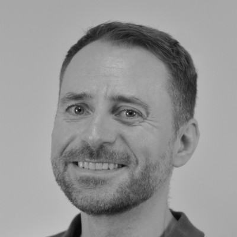

Sebastian Weber
I'm Sebastian, a UX/UI Designer from Cologne with a focus on Design-to-Code. I'm interested in the gap between a Figma file and a working interface, a gap I close myself, in React, TypeScript, and Tailwind.
Media and information history is more than a side interest to me: my bachelor's thesis explored Vannevar Bush's Memex concept and the origins of the graphical user interface, my master's thesis focused on ubiquitous computing.
I use data analytics and AI as an additional tool: when I set up tracking on my own portfolio or analyze user segments in raw data, I make design decisions based on evidence instead of assumptions.
That curiosity doesn't end when the workday does. An old wall tile, a plant, a piece of furniture that just comes my way, I trace its origin, often with AI as a research tool. I'm into electronic music, cats, and 16-bit video games, but also sun, beach, and sea.
🎧😺🎮 🌴☀️🏖️🌊
I'm currently looking for a role as UI Designer, Product Designer, or Design Engineer in NRW or remote.